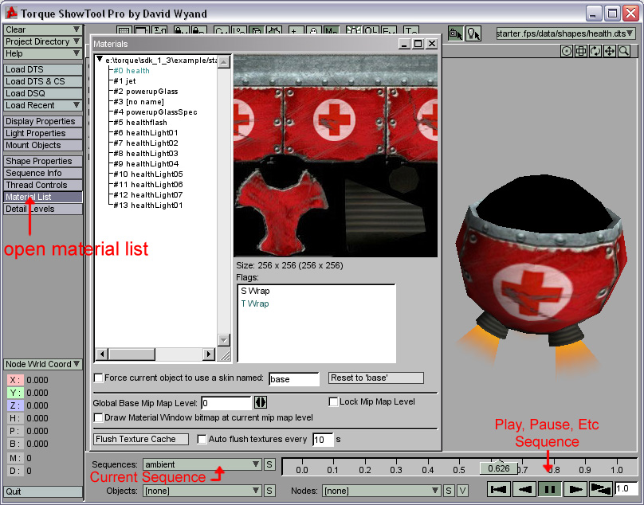

Introduction
So, you've got a cool model with some great animation to bring it to life. You export and drop it into Torque, but it's all white. What to do? Well, you could try rewriting your story so your game is set in a world completely devoid of color, or, of course, you can add some textures to it.
While Torque doesn't support every single material setting 3ds Max has, all the basics are covered. This includes Diffuse, Opacity, Self Illumination, and Additive Blending to name a few. Though this tutorial will primarily cover these different materials, we'll also go over billboards and ifl animations. Lucky for us, all of which are used in the ThinkTanks Powerup. The powerup model's geometry is very simple, but it's material settings that are anything butt.
Setting up the Base Material
Basic Diffuse Material
The main body of the powerup uses the simplest of the materials we'll be setting up during this tutorial. To start with, open the Material Editor, and select a blank material Slot. Name this material Health. While providing a name other than the default ones is not necessary for setting materials up for torque, since we'll be working with a number of different materials during this tutorial, it'll help with organization.
The body of the powerup uses a Diffuse texture and an Environment map. To add the Diffuse texture, click the square next to the Diffuse color swatch. In the window that pops up, select Bitmap. If you don’t see bitmap, make sure under Browse From: on the Material/Map browser New is selected. After you select Bitmap, another window will pop up to let you choose what bitmap texture you want to use. Pick the health.jpg texture. Although 3ds Max can use a ton of different image formats, Torque only supports jpg and png, so make sure the textures you use are in one of these two formats.
Max will now switch the material editor to a screen showing all the various options for bitmap textures. Since this is a diffuse texture, we don't need to change anything in here. Click Go To Parent to move back to the top of the Material.
We could keep the material like this with just the Diffuse texture, but let's add an Environment map so the metal is a little shiny looking ingame. The strength of Environment mapping in torque can be controlled by either the Reflection spinner in max, or the Alpha channel of a texture; we'll be using the Alpha channel. Keep in mind though that using the Alpha channel for reflection on a model that also uses the Alpha channel for opacity is generally not a good idea. In this case, you'd want to use the reflection spinner to control its strength.
Since we just have health.jpg, I'll walk you through creating an Alpha channel to use for the environment map. To begin with, open health.jpg up in Photoshop. You can use a different image editor if you don't have Photoshop, but you may have to search around a bit to find a similar method in it. First, right click on the Background layer, and left click duplicate. Push Ctrl+Shift+U to make this new layer greyscale. Since paint is a bit less reflective than bare metal, use the Rectangular and Elliptical Marquee tools to select all of the texture except the bolt heads and the metal strip along the top. Once you're done selecting, go to Image -> Adjustments -> Brightness/Contrast and drag the brightness slider down to about -30. Click ok, then click once with one of the Marquee tools to deselect everything. Go back to Brightness/Contrast, and drag brightness down to around -35 and contrast up to around +10. We want a fairly faint Environment Map effect, so we are keeping the layer that will be used for our alpha map fairly dark.
Now that we have a texture to use for the Alpha map, we need to set it up as a Mask in Photoshop. Duplicate the Background layer again by right clicking on it, then left clicking on duplicate. With this new layer selected, click on Add Layer Mask at the bottom of the Photoshop layers pallet. This will add a Mask channel to this layer.
Select the greyscale layer you created earlier, push Ctrl+A and then copy this layer by pushing Ctrl+C. Hide the greyscale and Background layers by clicking the little eye icon just to the left of them in the layers pallet. Select the remaining visible layer, and click the Channels tab at the top of the layers pallet. You'll see five layers here. Set the bottom all white one visible and select it. With the bottom layer selected, push Ctrl+V to paste the greyscale image you created earlier into it. This will make Photoshop use the greyscale texture as the mask of the color texture creating a mostly transparent version of the health.jpg texture.
Go back to the Layers tab, and on the remaining visible layer, click the colored thumbnail on the left to switch off the Alpha channel. All that's left to do now is save the new health texture to a .png. So go to File -> Save As and choose png from the format list, and name it health.
Now we have a version of health.jpg saved as health.png, we can setup the material with an environment map. First, we need to change the Diffuse channel to use health.png instead of health.jpg, so click the square next to the Diffuse color swatch to switch back to the bitmap properties for the Diffuse channel. Click the wide button with the health.jpg texture listed in it, and select health.png instead. Click Go To Parent. <imExpand the Maps rollout, and drag the health.png texture in the wide button beside Diffuse Color to the wide button beside Reflection. Select Copy and click ok. Click the button you just copied the texture to, and change Mono Channel Output to Alpha.
To assign the material to the mesh it's for, right click on the sphere up above for the material you're working on (it'll have the material wrapped around it) and make sure Drag/Copy is checked. Now click and drag that sphere onto the powerup2 mesh to assign your new Health material to it. You'll probably want to be able to see the material on the mesh in the viewport so you can make sure it's showing up as you expect, so click the Show Map in Viewport button. If you exported the model now, and put the dts and health.png in the same directory, you'd see the powerup with the body textured.
Setting up Glass
Alpha Opacity
Now that you have an idea how to setup a basic material for torque, it's time to look at some of the other more complex settings possible. Obviously you don't want glass to be solid, the whole point of using glass is that it can be seen through. Luckily for you, torque supports Opacity. When setting up Opacity, you have two options: you can use the Opacity Spinner to set the entire material to a single level, or, as we'll be doing in this tutorial, you can use the alpha channel of a png to control opacity. Using a png's Alpha Channel provides the advantage of being able to selectively adjust the opacity of a material. Instead of it all being one value, you could, for instance, have most of it completely solid, and place holes in it.
To setup the glass material, first move to a new Material slot, since you don't want to overwrite the Health material you just created. Name this material Glass. Once again, click the little square next to the Diffuse color swatch, and choose Bitmap from the menu. Select powerupGlass.png, and then click Go To Parent.
Since we're using the same bitmap to control the opacity, click and drag from the square next to the Diffuse color swatch to the square next to the Opacity spinner. A new dialog will pop up asking what method of copy you want to use. Since we'll be changing some settings from what the Diffuse channel uses, select Copy, and click OK.
We only need to change one setting to enable Opacity using the Alpha Channel. Simply change Mono Channel Output: from RGB Intensity to Alpha. If Alpha is greyed out, make sure you're using a png not a jpg, and if it's still greyed out, check you're Image Editor settings, as you didn't save the png with an alpha channel.
Click Go to Parent, drag the material onto the glass2 mesh, and click on View Map in Viewport. If you're using DirectX for your viewport driver, you'll be able to see the Alpha Opacity in the viewport. If you're using OpenGL, you'll need to render to be able to see it.
Setting up Flash
IFL
So now you have your glass setup so it can be seen through in torque, but there's nothing interesting underneath it. Time to fix this! The light2 mesh of the powerup uses a special texture type called IFL, or Image File List, in order to animate the blinking light. An IFL file is a text file that lets you setup a series of textures to be played back flipbook style. You create an IFL by first creating a new .txt and renaming the extension to .ifl. Since we'll be naming this one health, you should have health.ifl now. Open this up using notepad or whatever text editor you prefer, and type the names of the images you want to use in the order they should play, one per line. By default, each image displays for one frame, if you want any of them to display longer than that, which we do with the first and last images, you can put the number of frames they should display after them. For this IFL, you should have the following:
healthLight01.jpg 10
healthLight02.jpg
healthLight03.jpg
healthLight04.jpg
healthLight05.jpg
healthLight06.jpg
healthLight07.jpg
healthLight01.jpg 34
This IFL will play healthLight01.jpg for 10 frames, then continue playing the others one frame each, till it reaches the end, healthLight01.jpg again, which it will play for 34 frames.
The healthLight images were created by first creating a new image in Photoshop with a resolution of 32x32 pixels. The background layer was then filled with solid black. Save this image as healthLight01.jpg After saving, create a new layer a fill it with bright red. Go to File -> Save As and name it healthLight02.jpg. Hide this red layer by clicking the little eye to the left of it, and create yet another new layer. This time, use a 12 pixel wide paintbrush to put a red dot in the center of the layer. Go to Filter -> Blur -> Gaussian blur and set it to 6.0 pixels. Save this image as healthLight03.jpg. Change the Layer opacity for the layer with the blurred dot to 80% and save it as healthLight04.jpg. Reduce it to 60% and save as healthLight05.jpg. Continue reducing by 20% and saving until you reach 0%.
When setting up a material using IFL files, you treat the IFL as you would any other bitmap texture. So pick a new material slot, name it Light, and assign health.ifl to the Diffuse channel. Click Go to Parent, as we have a few other settings to change for the material.
Self Illumination

While this material doesn't use Opacity, it does make use of one of the other material settings support by torque: Self-Illumination. Self-Illumination is basically a way to control the amount of shadows a material receives in torque. At 0 (the default) It recieves full shadows ingame. As you increase the spinner, the amount of shadows it receives gradually decreases, till at 100, torque completely ignores shadows on that material. This is handy for things like lights (such as the one we're setting up) and can also help with cartoonish graphics by making things look more vibrant. Since this material is for a light, go ahead and set Self-Illumination to 100.
Now that the Light material is setup, you need to assign it to the light2 mesh. Since light2 is beneath glass2, you'll likely have a bit of trouble if you drag and drop, so first select light2 in the viewport, then click Assign Material to Selection in the material editor.
Setting up Glow
So now you have a blinking light on the powerup, but what good is a light that doesn't appear to light anything? Using Opacity, Billboards, and Visibility animation, it's easy to create a simple effect similar to that of a glow shader.
Billboard
In the scene, you'll see a mesh named BB::Flash2. Since the BB:: in front of its name tells the engine that that mesh is a billboard, it will always rotate around its pivot point so that its Y- axis is facing the player. We'll be applying a texture with an alpha map to make it look round, so With the billboard always rotating to face the player it will create a glowing aura effect around the light.
Alpha Opacity
To start with, pick a new material slot, name it Aura, and assign healthflash.png to the Diffuse channel. Click Go To Parent, and copy that material to the Opacity channel by dragging from the Diffuse channel's square with an M in it (showing that it has a material) to the square next to the Opacity channel's spinner. Select copy and click OK. Like before, change Mono Channel Output to Alpha to enable Alpha opacity. Click Go To Parent.
Self Illumination
Since this is supposed to be a glow around a light, we want it to look bright, so set Self-Illumination to 100. Go ahead and drag this material onto the BB::Flash2 mesh, and click Show Map in Viewport to see how it looks.
Visibility Animation
Now you should have a nice glow around the light, but the lights not always on, and the glow is. So we need to animate its visibility to match the light. Unfortunately, Max will not show the animated visibility when Alpha mapped Opacity is also shown, so click Show Map in Viewport again to turn that off. To animate its visibility, first turn on Auto Key (it will turn red when it's on). Make sure the Time Slider is at frame 0, right click on the BB::Flash2 mesh, and left click properties. In the window that comes up, change Visibility to 0.0 and click ok. Move the time slider to frame 10, right click the mesh, left click properties and change it to 1.0 then click OK.
You should now have keys for this mesh at frames 0 and 10. Since we want it to be a sudden quick blink, we'll need to add two more. First, left click on the key at frame 0, then while holding shift, drag it to frame 9. This will create a new key with the same settings. Since visibility is blended between keys, having 0.0 right next to 1.0 will make it go straight to 1.0, instead of fading in. once again, left click on the key at frame 0, and holding shift, drag it to frame 14. Now the flash will quickly fade out after appearing, to match the blinking light.
Setting up Specular
Billboard
Billboards don't always have to appear to rotate in place. By moving the pivot point of the billboard for the BB::Spec2 to the center of the light2 mesh and moving the actual mesh to just a hair outside of the glass2 mesh and off center from the Y- axis, we can create a fake specular highlight on the glass. With the pivot centered on the light2 mesh, and the mesh just outside the glass2 mesh, it will appear to slide around on the glass.
Alpha Opacity and Self Illumination
Currently though, it would just be a square ingame, so once again we need to create a new material. Switch to yet another empty material slot, name it Spec, and assign powerupGlassSpec.png to the Diffuse channel. Then copy it to the Opacity channel like last time, and change Mono Output to Alpha. Click Go To Parent, and change Self-Illumination to 100.
Billboard Tricks
Billboards aren't limited to just flat planes, though that's what we've used them for in this shape. In thinktanks for instance, the eyeballs on the brains are billboards, so they always stare at you. You could also use a billboard for something like a security camera, basically anything you want to always track the player. They can also be used for Markers in the WorldEditor, to customise the location of your items or new datablocks. Here is a billboard Marker example, featuring a simple billboard facing the camera - Billboard Marker.
To see an example of an eyeball mesh used as a billboard Go Here. This model uses an eyeball mesh setup as a billboard like we did with the specular and aura materials above, and also has an extra sphere mesh (which is NOT a billboard) with Alpha opacity to provide a bit of shadow around the edges of the eyeball. If we were to paint the shadow onto the eyeball's texture, it wouldn't look right as it would constantly be out of place. If you want to take a look at the Max 5 file and try dissecting it yourself, as well as the dts so you can see it in action, Click Here.
Setting up Jets
Alpha Opacity and Self Illumination
We have one last material to setup for this powerup model. Once again, it's going to use Alpha opacity and Self-Illumination, so pick yet another empty material slot, name it Jets, and put jet.png in the Diffuse channel. Copy this material to the Opacity channel, and change Mono Channel Output to Alpha. Then click Go To Parent, and set Self-Illumination to 100.
Additive Blending
This material has one additional setting the others did not use: Additive Blending. Because this is supposed to be flames coming out of the jets, we want it to look hot ingame. Additive Blending makes semi-transparent objects look brighter by adding the Diffuse channels colors to the background. Obviously, the darker the material is to begin with, the less it will brighten what's behind it, so typically you only use it with materials that are relatively bright to begin with. Torque also supports Subtractive Blending, but it's rarely used, since it most cases, it looks weird and ugly.
To turn on Additive Blending for this Jets material, make sure you are at the top of the material (if not, click Go To Parent) and expand the Extended Parameters rollout. By default, all materials are set to Filter for the Advanced Transparency type. For Additive blending, simply change that to Additive.
General Export Information
Sequences
The powerup makes use of a single animation named Ambient. While the meshes in the scene are already animated and the Ambient sequence object is setup for them, during this tutorial we added several new types of animation with the materials we created.
If you were to export the model right now, you'd not see the blinking light, so we need to tell the exporter that both IFL and Visibility animations exist. To do so, first select the Ambient sequence object in the scene. The easiest way to do that is to push H to bring up the Select Objects dialog, click on Ambient to highlight it, then click Select. With it selected, go to the Modify tab, and you'll see a number of options for it in the right sidebar. The ones we'll want to modify are under the Export Control rollout, so if it isn't already, click on it to expand it. Currently only the Transform Animation is checked, so only mesh transform animations would be exported. To enable Visibility and IFL animations, simply check Visibility Animation and IFL Animation under Enable.
Export

Now that the hierarchy and materials are setup, we can export the model. Go to the Utilities tab in 3ds Max, click the More button, and select DTS Exporter Utility. You'll now have several new rollouts appear on the utilities tab. Since we don't need to change any settings for this model, just click Whole Shape, navigate to the folder you want to put the dts in, and give it a name.
Before dropping the shape ingame, its usually a good idea to look over things first in show tool to make sure everything is as it should be. Torque comes with a basic show tool, but Show Tool Pro allows to check many more things, as well as having a much easier to use UI. Of particular interest to this tutorial, is the ability to check material settings for a dts.
To do so, drop your exported dts and whatever textures it uses into a folder under /data/shapes, in this case, <torqueroot>/starter.fps/data/shapes/powerup. Now load up Show Tool Pro, and click on the Load DTS button to load your shape. After loading the powerup, you can select and play sequences with the controls along the bottom. To view the materials used, click the Material List button on the left hand side. In here, you can see all the textures the dts will look for, as well as the settings each uses.
If everything looks good in show tool, its time to load it ingame. Start up torque, load a mission, and open the mission editor (F11 by default). Push F4, and expand the Static Shapes hierarchy till you find your shape. Just click on it once to add it, and you're done!
Troubleshooting
No Details to Export
Either you have no detail# dummy in the scene, or you do but it is not linked to the root node.
No bounding box found
You have no mesh in the scene named bounds
Unexpected material type on node <somenode>
<somenode> has a material type other than Standard applied to it. Find the material used for that mesh, and make sure it is a standard material, not Raytrace or any of the other types.
Model exports but isn't visible when loaded ingame
You have your detail numbers mixed up. Meshes are set to one detail number, and the node is set to another. You should have one node with the same number per set of meshes. Ie if you have ball2 and ball50, you should have detail2 and detail50
You setup the materials and they're visible on the model in 3ds Max, but the dts still shows up white ingame
Several things can cause this, if the textures are not in the same folder as the dts, they will not be found. If the textures are there but still not showing up, make sure that they are either jpg or png format, and that they are a power of 2 resolution. Power of 2 means each side must be 2, 4, 8, 16, 32, 64, 128, 256, 512, or 1024 pixels long.
You can run right through your model ingame and don't want to be able to
Either you don't have a collision mesh setup in your scene properly (requires a collision-# node linked to the root node and a col-# node linked to start with # being the same for both) Or your collision mesh is concave. All collision meshes MUST be convex or the shape will export fine, but the engine will ignore the collision. To test whether a mesh is convex or not, in max, go to the Utilities panel,and select reactor from the list of buttons. Expand the Properties rollout, and near the bottom is a Test Convexity button that will tell you whether the currently selected mesh is convex or concave.